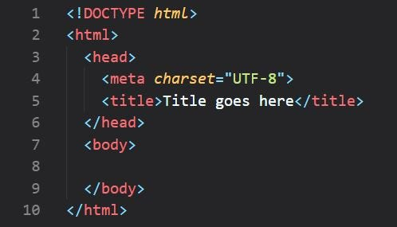

O HTML (HyperText Markup Language, ou em português Linguagem de Marcação de Hipertexto é a linguagem de marcação padrão usada para criar e estruturar páginas da web.
Ele define o esqueleto e a organização de elementos visuais — como textos, imagens, tabelas e links — que os navegadores leem e exibem aos utilizadores.

Exemplo
Descobre mais sobre o HTMLO que serviria melhor de exemplo de código do que o próprio código desta página?
<!DOCTYPE html>
<html>
<head>
<title>Aprende HTML</title>
</head>
<body>
<nav>
<a href="./index.html">HTML</a>
<a href="./Sobre Mim.html">Sobre Mim</a>
</nav>
<h1>Aprende HTML</h1>
<nav>
<ol>
<li><a href="#Introdução">Introdução</a></li>
<li><a href="#Conceitos Básicos">Conceitos Básicos</a></li>
<li><a href="#Ainda com Dúvidas?">Ainda com Dúvidas?</a></li>
<li><a href="#Exemplo">Exemplo</a></li>
</ol>
</nav>
<div id="Introdução">
<h2>Introdução: HTML</h2>
<p>O <strong>HTML</strong> (<em>HyperText Markup Language</em>, ou em português <em>Linguagem de Marcação de Hipertexto</em>) é a linguagem de marcação padrão usada para criar e estruturar páginas da web.<br><br> Ele define o esqueleto e a organização de elementos visuais — como textos, imagens, tabelas e links — que os navegadores leem e exibem aos utilizadores.</p>
<img src="https://miro.medium.com/v2/1*5gJzummAqpBDGATo0fjU6Q.jpeg" height="250" width="340" border="20"/>
<p>Exemplo</p>
<a href="https://pt.wikipedia.org/wiki/HTML" target="_blank">Descobre mais sobre o <strong>HTML</strong></a><br><br>
</div>
<div id="Conceitos Básicos">
<h2>Conceitos Básicos</h2>
<h3>Tags principais</h3>
<ol>
<li><strong><!DOCTYPE html></strong> : Deve ser sempre a primeira linha de código nos teus arquivos HTML. Isso informa ao navegador qual versão de HTML ele deve esperar.</li>
<li><strong><html></strong> : Vai conter todo o seu código HTML.</li>
<li><strong><head></strong> : Vai conter as informações sobre a página da web, como o título.</li>
<li><strong><body></strong> : Vai conter tudo o q os leitores conseguem ver.</li>
</ol>
<h3>Tags secundárias</h3>
<ol>
<li><strong><title></strong> : Adiciona um título à tua página da web (usa-se dentro da tag <head>).</li>
<li><strong><div></strong> : Funciona como uma caixa invisível para juntar vários elementos e organizá-los.</li>
<li><strong><p></strong> : Serve para criar um parágrafo.</li>
<li><strong><ol></strong> : Serve para criar uma lista ordenada.</li>
<li><strong><ul></strong> : Serve para criar uma lista sem ordem.</li>
<li><strong><li></strong> : Serve para criar um item de uma lista.</li>
<li><strong><a href="inserir ligação escolhida"></strong> : As "Anchor tags" são usadas para criar links para páginas internas, páginas externas ou conteúdos na mesma página.</li>
<li><strong><img src="inserir ligação escolhida"></strong> : Serve para inserir uma imagem na página.</li>
<li><strong><video src="inserir ligação escolhida"></strong> : Serve para inserir um vídeo na página.</li>
<li><strong><table></strong> : Serve para criar uma tabela.</li>
<li><strong><!-- comentário --></strong> : Serve para adicionar um comentário que apenas aparecerá no código (não será visível para os leitores).</li>
</ol>
<h4><strong>Nota:</strong> Todas as tags têm a sua forma aberta como a forma fechada:</h4>
<h5>< > (Abrir): É a tag de abertura. Indica ao navegador onde o elemento e a sua formatação começam.<br><br> < /> (Fechar): É a tag de fecho. Tem sempre uma barra de fração (/) antes do nome e indica ao navegador onde o elemento termina.</h5>
</div>
<div id="Ainda com Dúvidas?">
<h2>Vídeo explicativo</h2>
<iframe src="https://youtube.com" height="260" width="320" controls></video>
</div>
<div id="Exemplo">
<h2>Exemplo</h2>
<p>O que seria melhor um exemplo de código do que o próprio código desta página?</p>
<!--código copiado -->
</div>
</body>
</html>